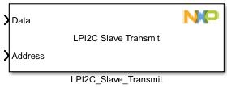
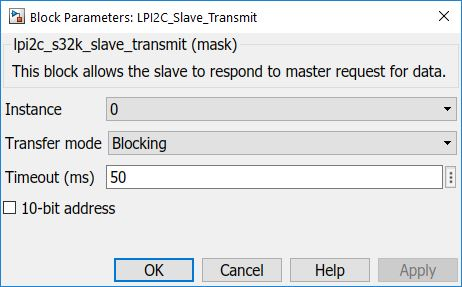

LPI2C Slave Transmit Block
This block allows the user to perform a blocking or non-blocking slave transmit operation (on Master request).
Block Image
Inputs:
- Data - vector that needs to be sent to the slave (UINT8 data type).
- Address - set slave address here (UINT8 data type).
Outputs:
- None
Parameters and Dialog Box
The block dialog consists of the following tabs:
General
Instance
Select an instance of LPI2C to use (on S32K144 there is only one).
Transfer mode
Select blocking or non-blocking transfer operation.
Timeout
Insert timeout value (in ms) for the transfer.
Note: Only available if Blocking transfer mode is selected.
10-bit address
Check the box if you want 10-bit addressing; leave it unchecked if you want 7-bit.
Block Dependency
Block Miscellaneous Details
- None